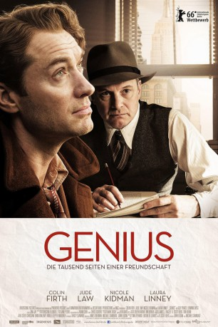

#5014 Genius: Die tausend Seiten einer Freundschaft
Alternativ: Genius
 
 IMDB-Wertung: 6.5 / 10
IMDB-Wertung: 6.5 / 10  Metascore: 0
Metascore: 0 
Für Lektor Maxwell Perkins ist klar, was einen grandiosen Roman ausmacht: Im New York der 1920er Jahre nimmt er noch unbekannte aber höchst talentierte Autoren wie Ernest Hemingway oder F. Scott Fitzgerald erstmals unter Vertrag. Als der junge Thomas Wolfe mit einer losen, tausendseitigen Blättersammlung in Perkins' Büro auftaucht, sagt ihm sein Instinkt sofort: Hinter diesem Chaos verbirgt sich ein literarisches Genie! Perkins versucht, die überschäumenden Texte des exzentrischen Künstlers zu bändigen, Lektor und Autor kämpfen um jede Formulierung. Es entsteht eine Freundschaft, die sowohl Wolfes Geliebte Aline, als auch Perkins' Ehefrau Louise eifersüchtig macht und ihre Geduld strapaziert.
Jahr: 2016
Dauer: 104 Minuten
FSK: 6
Land: England Studio: Wild BunchTonspuren: DD5.1 - ,
Untertitel: Deutsch,
Auflösung: 1080p (1920x800) Größe: 10342 MB
Genre: Drama, Biographie
Regisseur: Michael Grandage
Drehbuch: Karen Janszen
Soundtrack:
Darsteller:
 Colin Firth als Max Perkins
Colin Firth als Max Perkins Jude Law als Thomas Wolfe
Jude Law als Thomas Wolfe Nicole Kidman als Aline Bernstein
Nicole Kidman als Aline Bernstein Laura Linney als Louise Perkins
Laura Linney als Louise Perkins Guy Pearce als F. Scott Fitzgerald
Guy Pearce als F. Scott Fitzgerald Dominic West als Ernest Hemingway
Dominic West als Ernest Hemingway Vanessa Kirby als Zelda Fitzgerald
Vanessa Kirby als Zelda Fitzgerald- Angela Ashton als Bertha Perkins
- Eve Bracken als Zippy Perkins
 Corey Johnson als John Wheelock
Corey Johnson als John Wheelock Harry Attwell als Assistant Editor
Harry Attwell als Assistant Editor- Rosy Benjamin als Scribner's Staff
 Erick Hayden als Scribner's Staff
Erick Hayden als Scribner's Staff- Alex Large als Scribner's Staff
- Nick Mercer als Scribner's Staff
- Katherine Kingsley als Purring Woman
- Ian Drysdale als Actor
- Richard Dempsey als Director
- Cassandra Nina als Woman at Bar
 Andrew Byron als Grand Central Station Conductor
Andrew Byron als Grand Central Station Conductor Jane Perry als John Hopkins Hospital Nurse
Jane Perry als John Hopkins Hospital Nurse- James Bierman als Funeral Minister
 Elaine Caulfield als Mabel Wolfe
Elaine Caulfield als Mabel Wolfe- Mark Arnold als Boat Captain , uncredited
- Sophia Brown als Sonia Marks , uncredited
- Glenn Bunn als Dock Worker, Homeless Man , uncredited
- Greg Canestrari als Head Train Guard , uncredited
- David Christopher-Turner als 5th Avenue Banker , uncredited
 Bern Collaco als New York Bar Customer , uncredited
Bern Collaco als New York Bar Customer , uncredited Gioacchino Jim Cuffaro als Diner , uncredited
Gioacchino Jim Cuffaro als Diner , uncredited- Jason Grangier als Street Coffee Seller , uncredited
- Joy Isa als Jazz Club Customer , uncredited
- Jim Maidment als Manuscript Delivery Man , uncredited
 Kumud Pant als Train Commuter , uncredited
Kumud Pant als Train Commuter , uncredited- Alan Peett als Bowler Hat Train Commuter , uncredited
- Cory Peterson als The Neighbour , uncredited
- Boyd Rogers als Train Commuter , uncredited
 Atul Sharma als Train Commuter , uncredited
Atul Sharma als Train Commuter , uncredited- Steven F Thompson als Taxi Driver , uncredited
- Gillian Hanna als Julia Wolfe
- Katya Watson als Jane Perkins
- Lorna Doherty als Peggy Perkins
- Makenna McBrierty als Nancy Perkins
- Miquel Brown als Eleanor, Perkins' Maid
- Lucy Briers als Miss Wyckoff
- Ray Strasser King als James, Mailroom Clerk
- David Altaner als Scribner's Staff
- Charles Dinsdale als Scribner's Staff
- Kenneth Hazeldine als Scribner's Staff
- Oliver King als Scribner's Staff
Datei: X:\2016(G-M)\Genius Die tausend Seiten einer Freundschaft (2016, FSK6, 1920x800).mkv seit 19.12.2016
Festplatte: HD 2016(A-Z)
 Es gibt insgesamt 164 Filme in der Gruppe '2016(G-M)'
Es gibt insgesamt 164 Filme in der Gruppe '2016(G-M)'